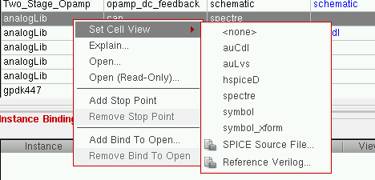

Using Text Files in Configuration
In your design configuration, you can also use text files that contain source descriptions of design elements. Instead of binding a cell, instance, or occurrence to a view, you can specify that a text file be used. These file bindings are similar to view bindings.
You can use the following types of text files in a configuration:
Using Source Files in Configuration
You can use source files for HSPICE or SPICE design blocks in your design configuration. You use a source file by binding a cell, instance, or occurrence to the source file. This file binding is similar to a view binding.
Binding to a source file puts the the sourcefile property on the cell, instance, or occurrence. The value of the property is the path to the source file and it is stored in the prop.cfg file in the configuration view. The sourcefile property is used by other applications in the flow.
To bind a cell, instance, or occurrence to a source file,
- If you are binding a cell, display the table view of the Hierarchy Editor; if you are binding an instance, display either the table view or the tree view; if you are binding an occurrence, display the tree view and turn on the occurrence editing mode.
-
Right-click the cell, instance, or occurrence.
Even if you are not in occurrence editing mode, when you edit an object in the tree view that has been identified as an occurrence (by having an occurrence binding, occurrence stop point, or occurrence bind-to-open on it), you are editing the occurrence, not the instance. The tree view displays Target: Occurrence when you select such an object. -
From the pop-up menu, select Set Cell View / Set Instance View / Set Occurrence View – SPICE Source File. For example:The Enter the SPICE/HSPICE source file Location form appears.
- In the form, do one of the following:
- Click OK.
The cell, instance, or occurrence is bound to the source file. The View to Use column displays the path to the file. The  icon next to the path indicates that it is a file binding.
icon next to the path indicates that it is a file binding.
To remove a source file binding,
- If you are editing a cell, display the table view of the Hierarchy Editor; if you are editing an instance, display either the table view or the tree view; if you are editing an occurrence, display the tree view and turn on the occurrence editing mode.
- Right-click the cell, instance, or occurrence.
- From the pop-up menu, select Set Cell View / Set Instance View / Set Occurrence View – <none>.
Related topics
Using Verilog Files in Configuration
Return to top